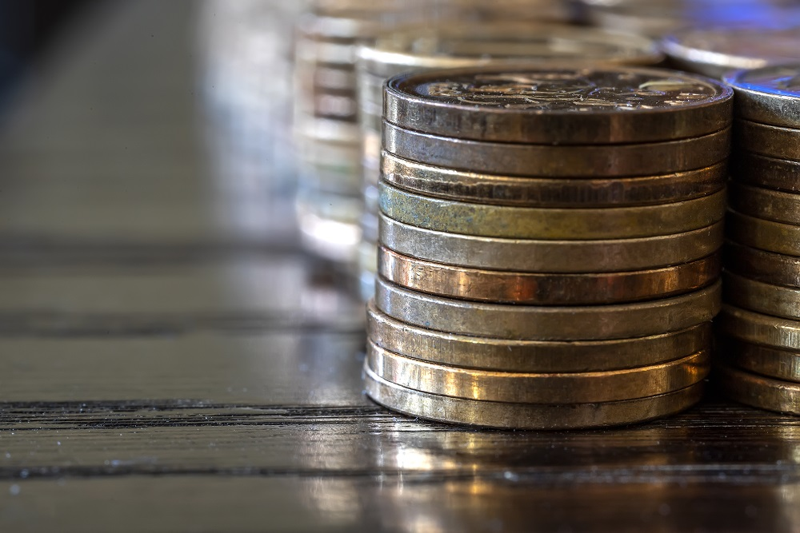

Understanding Crypto - Coins and Tokens
Sometimes you can get confused. People are talking about the same currency, but sometimes calling it a coin, sometimes calling it a token. Because of that one might figure that a coin and a token are both the same thing. We are going to look at the differences and why they are important.
Coins

A simple way of explaining this would be saying that a coin is a “financial instrument” and nothing else. The function of a coin is to be bought and sold. Many people will buy it in hopes that the cost will increase so that they can earn by selling it. Many will buy it so that they can move money around. But the basic idea is that a coin has three functions: to be bought, to be sold and to store finances.
There are some specific coin types. A “privatecoin” means the same thing as a coin, the only difference is that the transactions of that particular blockchain are not public. A “stablecoin” is a coin that has a fixed exchange rate, making it less volatile. An “altcoin” is every coin that is not the “original” Bitcoin. Many variations, but all of them serve a single purpose - trade.
Tokens
A token is what arises when blockchains are put to work. Tech savvy people soon realized that the blockchain system is very good at what it does and can be used in many other ways. So a token is a cryptocurrency that has a very specific use, predetermined by the creators. It can usually still be sold and purchased like a regular coin, but it has a different purpose assigned to it. The simplest way to explain this would be that while a coin is a “banknote”, a token is a specific “ticket” or “coupon” for something.
While a coin has its own blockchain, a token can be placed on an already existing blockchain. There are some that are designed specifically for that. The most well-known, the Ethereum Network has about 1000 different tokens placed on it. That means there are about 1000 various projects for Ethereum Network alone that use the benefits of a blockchain without the need of creating one themselves.
With so many projects of all types and sorts, it is not easy to categorize them all. Their functions can overlap and anyone can make something new. Because of that the best way to explain tokens is to show what some of them actually do.
The Utility Token
Currently the majority of all tokens are the utility tokens. Each application or project based on a blockchain can issue their own token that will be like a currency in their own system. For example, someone makes a project where they interview famous people. If you want to see those interviews, you would have to pay. 10 tokens to see each interview. So you buy 100 tokens for 1 dollar to see 10 interviews. That is how you pay for the service.
After a while the project starts a vote - who you want to see interviewed? But the only people who can vote are those who already hold tokens. If you have 70 tokens left, you get 70 votes. That way the owners of the project can be sure that those who voted are those who actually use the service.
There might be other functions for the tokens, not only watching or voting. Maybe you could pay with tokens to submit your own question or pay to see unedited footage. All of that happens in an environment that is honest, overseeable and efficient.
Then the project announces that they have interviewed a very famous person and suddenly everyone wants to see it, but they need 10 tokens to do so. Thus the demand for tokens rises, making them more valuable. What you bought for 1 dollar before the announcement could cost 3 dollars after.
These are just a few functions of utility tokens. Listing them is impossible, as each project is unique and most become very technical the deeper you dive into them.
The Security Token
These tokens usually share the same functions as shares or stocks do in regular companies. Owning this token means that you are taking a more active part in the project as a bond owner or a holder of a certain position. These tokens have much stricter regulations from governments and other regulatory organizations.
More often than not, security tokens and their real-life counterparts have no differences at all. Only notable because they are located on a blockchain and are more easily approachable for people from all around the world.
Certification Token
One of the most promising areas of tokens are those that can hold certain certificates and documentation. When an artist creates his work, he creates a signature in a token form. Whenever that artwork is being sold it is always sold together with this token of authentication. And that signature can never be counterfeited or sold twice. If the artwork is resold, the token changes owners publicly, so there can be no issues of “two owners”. The one who holds the signed token is the rightful owner of the painting. So whenever you see the token being sold, you can be sure that the painting sold with it is the original and not a counterfeit.
This way you can add a token to almost anything to verify its authenticity. A luxury car can have a token attached to that. A token that gets updated every time the car is serviced, meaning that the information about the car is exact and not faulty. Then, whenever the owner decides to sell the car, he just has to enter the token in the market. Everyone can see the car’s previous owners, technical history and state. No need to trust the seller - this information can’t be faked. And the one buying the token is the new owner of the car. In the future buying stolen things would not be an issue - if you do not have the token, you do not own the item.
Identity Token
Just like certification, but for yourself. While this is still a work in progress, it has a great promise. Imagine all the documents you get were placed on a blockchain somewhere. Your driver’s license, your university degree, your medical history. All placed on a blockchain and all of them controlled by you. When you look for a new job, share the university degree token with your employer, with all the grades and information set in stone. Suddenly everyone who has lied before can no longer provide such tokens and you stand out.
Lose your passport while traveling? It is on the blockchain. Did not take your driver’s license when driving? It is on the blockchain. Changing doctors and all your medical history is lost somewhere? No worries, it is on the blockchain. All wrapped in tokens you own and control.
Thank you for reading our blog. If you have any questions about the topic or want to suggest a new one, please write an email to [email protected].